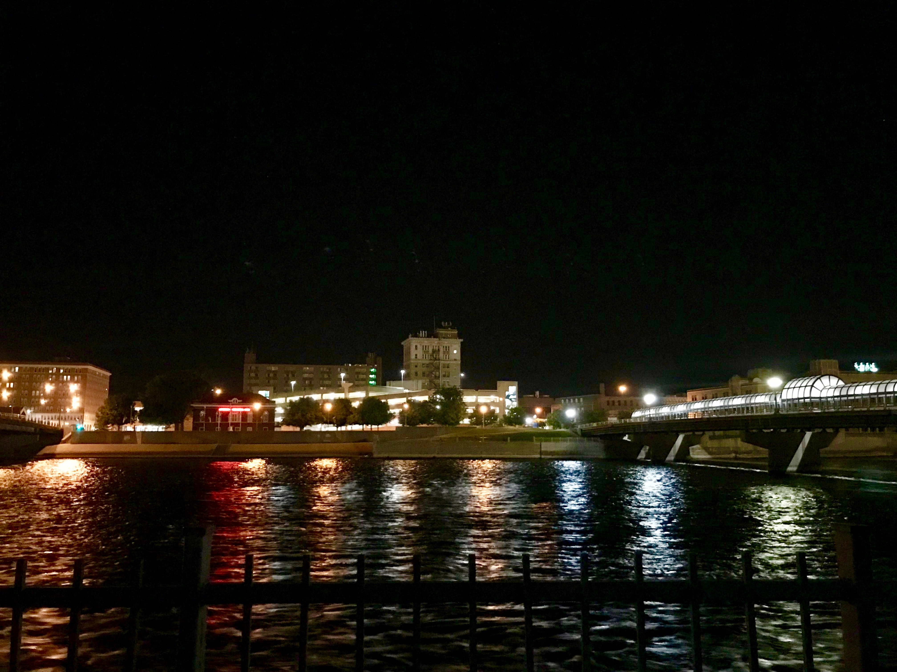
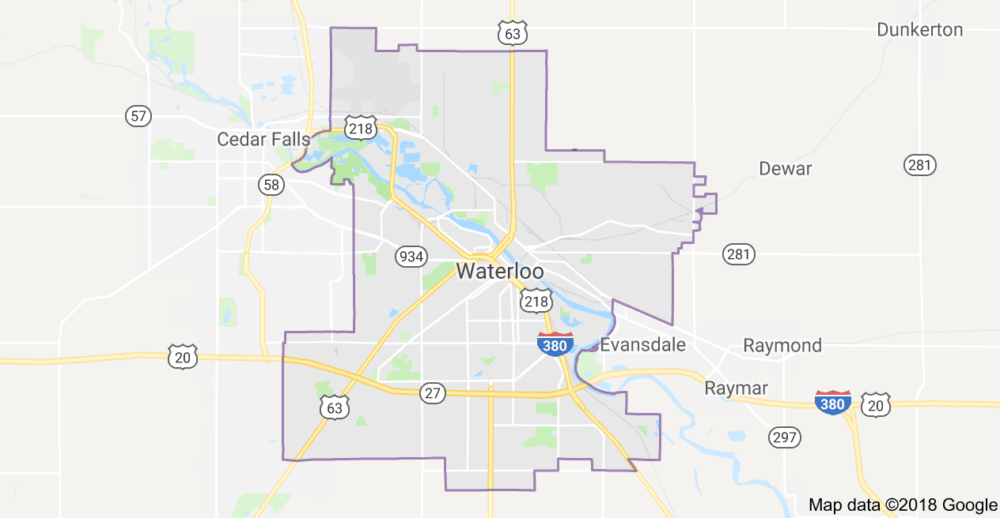
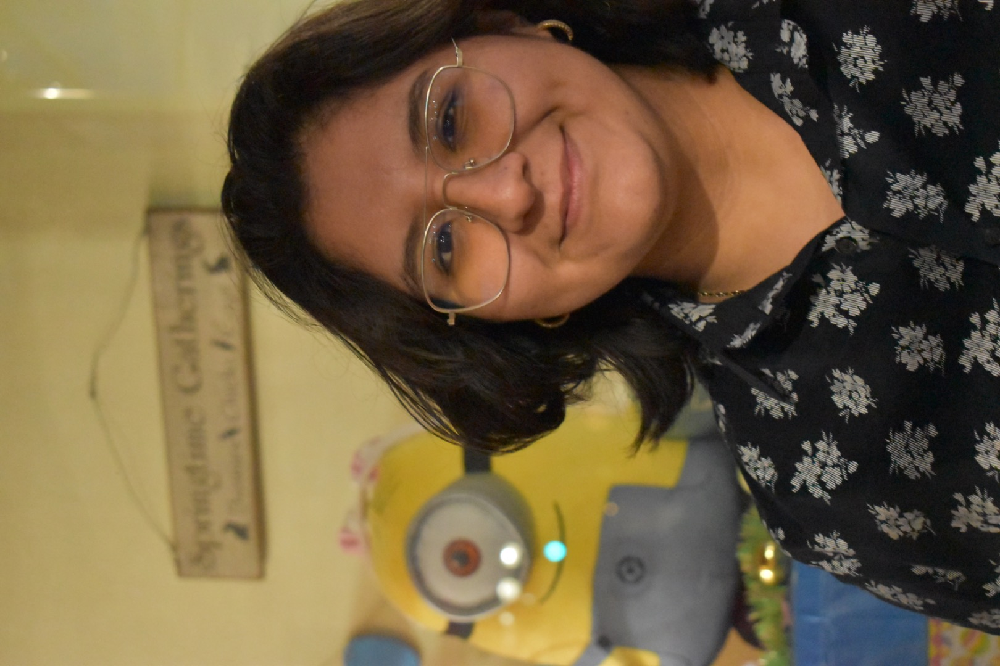
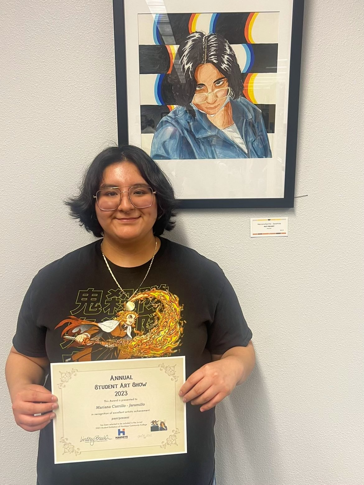

About Mariana
 Mariana, a 20-year-old aspiring artist and gamer, is on a quest to carve her niche in the world of creativity and digital adventures.
From a young age, Mariana found solace and joy in the strokes of her paintbrush and the lines of her sketches. Art, for her, is not merely a hobby but a lifeline, a means to communicate her thoughts, emotions, and dreams. With each stroke, she weaves stories, evokes emotions, and invites viewers into her colorful world.
Driven by her ambition to become an independent artist, Mariana has already achieved notable milestones. Her artwork has been auctioned off, showcasing her talent and earning her recognition in the local art community. Additionally, having her art displayed in prestigious art shows has been a dream come true, affirming her dedication and skill.
Beyond her artistic pursuits, Mariana's interests extend to the digital realm of gaming. Introduced to gaming through Fortnite, Mariana's passion for immersive virtual experiences has blossomed. Recently acquiring a PC, she has delved into a plethora of games, relishing the adventures and camaraderie they offer. With her witty humor and infectious enthusiasm, Mariana dreams of sharing her gaming escapades with the world, contemplating venturing into the realm of game streaming.
Vincent van Gogh stands as one of Mariana's most revered artists, his works serving as a perennial wellspring of inspiration. His bold brushstrokes and emotive canvases resonate deeply with Mariana, influencing her artistic style and igniting her creativity.
 